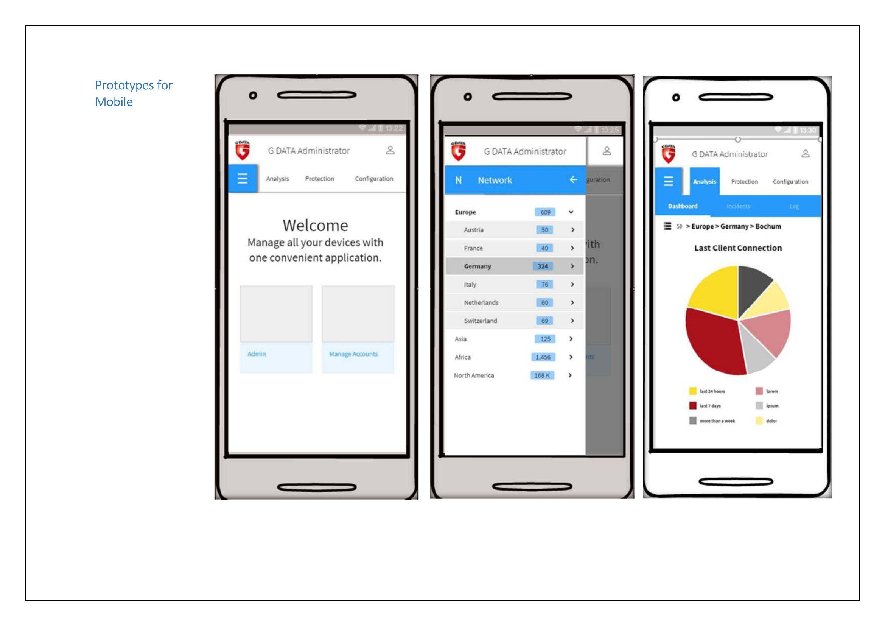
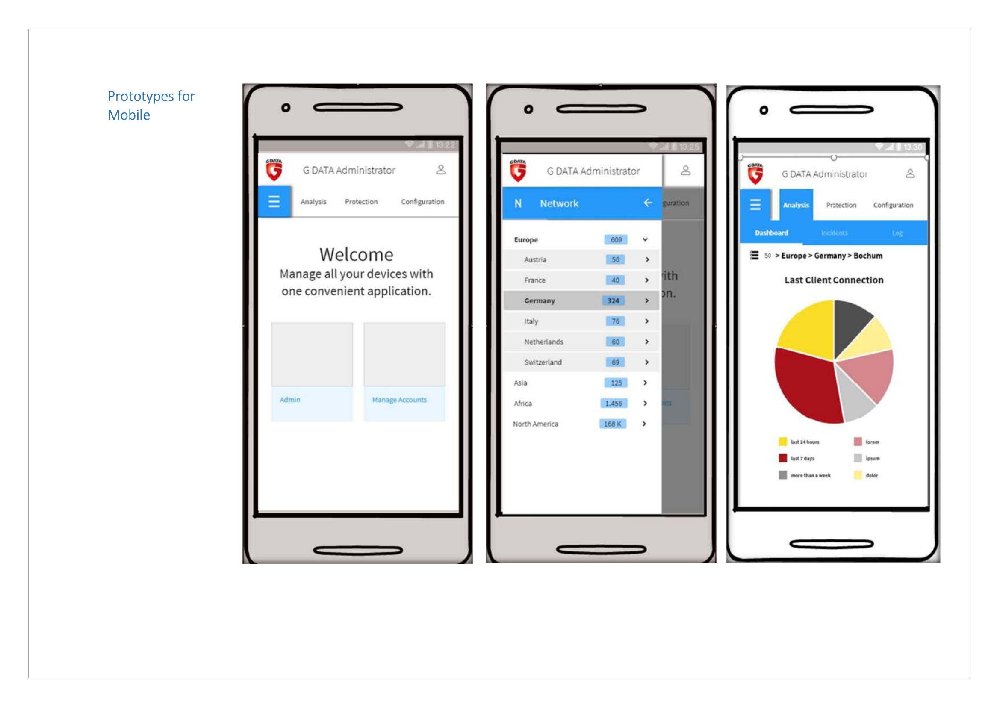

As Senior Product Manager at G DATA CyberDefence AG, I led the complete redesign of the B2B MMS (Mobile Management System) Administrator interface. This critical security management tool needed to evolve from a complex, technical interface to an intuitive, user-friendly platform that could be operated remotely with confidence.
Key Achievement
40% improvement in user efficiency through streamlined workflows and predictable interaction patterns.


 
